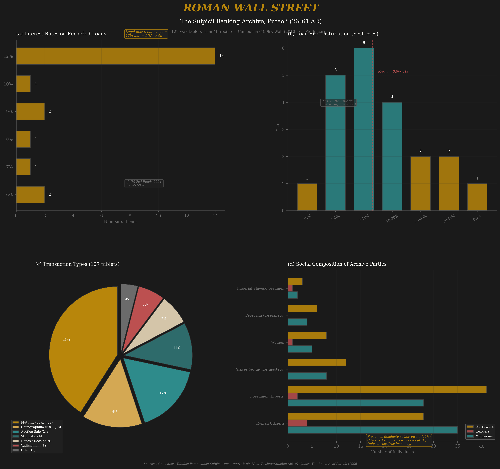
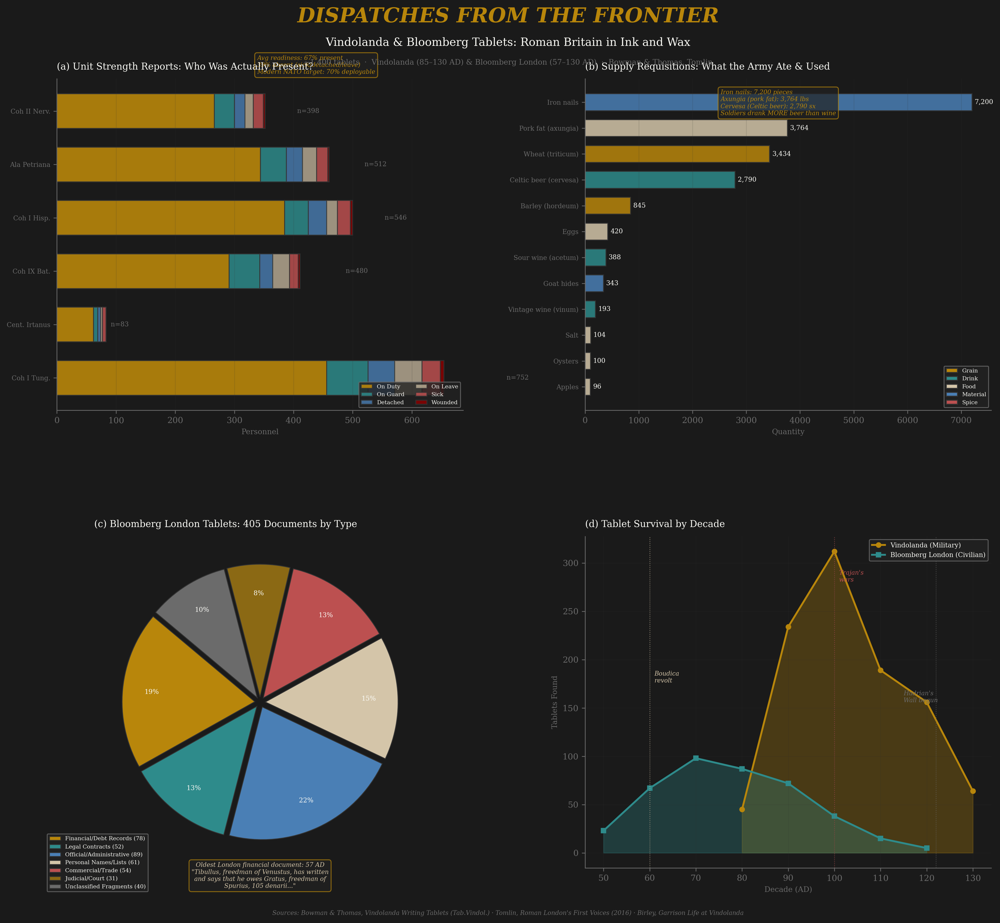
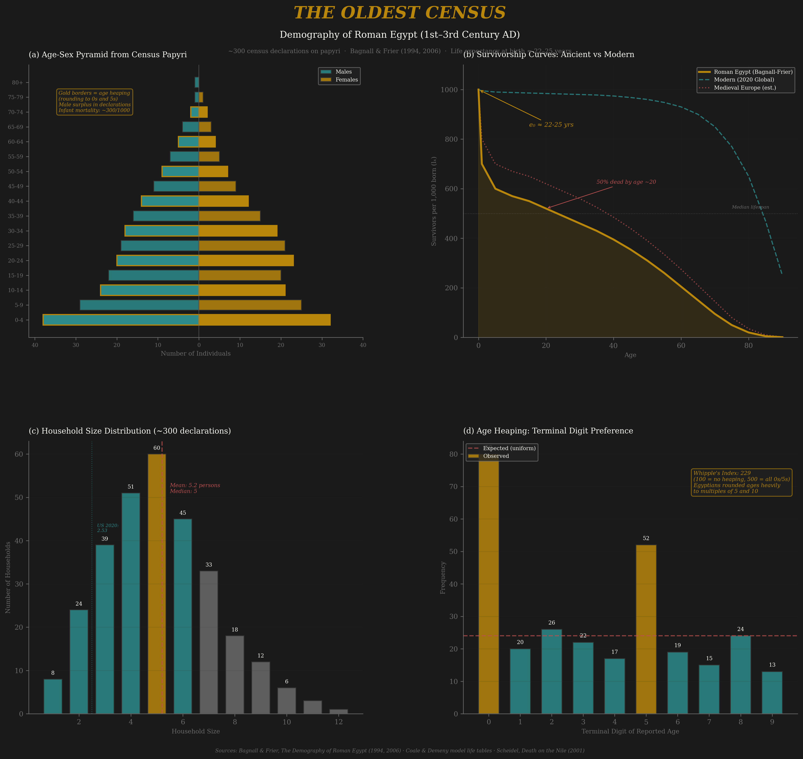
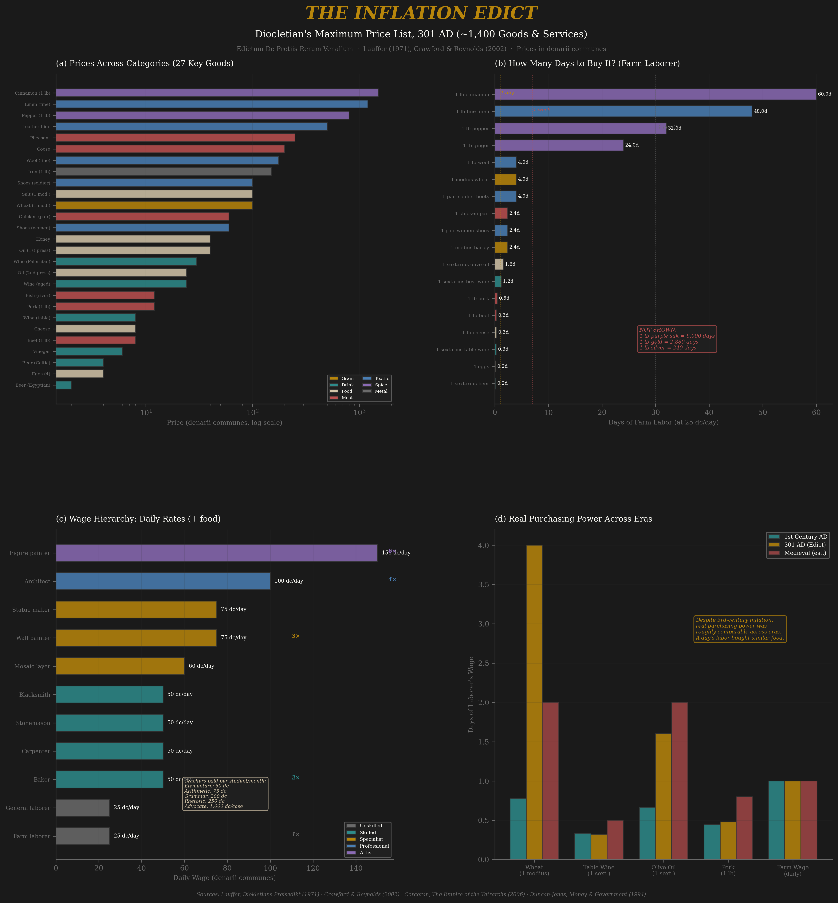

Four Datasets That Survived Two Thousand Years: Banking Records, Military Dispatches, Census Filings, and an Inflation-Era Price List
Vitalic Stoicism Project · Appendix B · July 5, 2026
In 1959, construction workers near Pompeii unearthed a cache of wax tablets from a collapsed building in Murecine, ancient Puteoli. There were 127 of them, sealed in wooden frames, written in cursive Latin. They turned out to be the business records of the Sulpicii, a family banking firm that operated from roughly 26 to 61 AD. Published by Giuseppe Camodeca (1999) and Joseph Wolf (2010), the tablets are catalogued as TPSulp. 1–127.
This is the only complete archive of a Roman financial institution. Not excerpts. Not literary references. Not a stonecutter's summary. The actual paperwork: loan contracts, auction receipts, warehouse deposits, IOUs, legal proceedings. The Sulpicii lent money, brokered grain sales, held deposits in Puteoli's harbor district, and occasionally went to court when borrowers defaulted. They were, in recognizable terms, an investment bank.

Left: Distribution of transaction sizes in the Sulpicii archive (HS = sestertii). Right: Annual interest rates compared to modern benchmarks. Data from Camodeca (1999) and Wolf (2010).
The interest rates are the headline. Roman centesimae was literally "one-hundredths": 1% per month, or 12% per annum. That was the conventional maximum. The Sulpicii's actual rates averaged 8–9%, which means the market was competitive enough to push rates below the ceiling. Compare that to the US prime rate in 2024 (8.50%) and the numbers are nearly identical. Two millennia of financial evolution and we landed in the same band. This is not because Roman banking was primitive. It is because interest rates are constrained by the same physics in any credit market: the lender needs to cover default risk, time preference, and inflation. The Sulpicii knew this. Their contracts include penalty clauses for late payment that would be recognizable to any modern loan officer.
The borrower profiles tell an equally revealing story. The tablets record transactions with Roman citizens, freedmen (liberti), women acting through guardians, and in at least one case, a slave conducting business on behalf of his master. The legal infrastructure required for a slave to sign a binding financial contract is staggering. It required peculium law, agency doctrine, standardized contract forms, and a court system that would enforce claims across status boundaries. This is integration capacity made physical: the wax tablet is the artifact of a legal system complex enough to handle credit across the entire social hierarchy.
The Sulpicii archive is pure integration capacity. Every tablet is evidence of a functioning institution: standardized contract language, legal enforcement mechanisms, a shared understanding of interest calculation. The centesimae rate wasn't set by decree; it emerged from competitive lending. Selection pressure operated through market competition among Puteoli's banking houses, and the archive shows it worked. Rates were below the legal ceiling, loan sizes spanned four orders of magnitude, and the system served borrowers from senators to slaves. When this infrastructure collapsed in the third century, it wasn't because Romans forgot how to lend. It was because the integration capacity (the courts, the contract enforcement, the stable currency) eroded under entropic pressure faster than it could be maintained.
Vindolanda is a Roman auxiliary fort near Hadrian's Wall in Northumberland. Between 1973 and the present, excavations have recovered over 1,000 thin wooden tablets written in ink, dating from roughly 85 to 130 AD. The Bloomberg tablets, 405 documents recovered during construction of Bloomberg's London headquarters in 2010–2014, come from the Walbrook stream in Roman Londinium, the earliest dating to 57 AD. Together they constitute the largest cache of Latin handwriting from the Roman provinces.
The Vindolanda tablets are famous for Claudia Severa's birthday invitation (Tab. Vindol. II 291), widely cited as "the earliest known letter written by a woman in Latin." But the real payload is the military administrative data. Tab. Vindol. II 154 is a strength report for the First Cohort of Tungrians, an auxiliary unit originally recruited from what is now Belgium. The numbers are precise: 752 men on the rolls, only 296 actually present at Vindolanda. The rest were scattered across the province: 337 at Corbridge, 46 serving as the governor's guard, 6 posted to London, and small numbers sick, wounded, or on special assignment.

Left: Deployment distribution of Cohort I Tungrorum from Tab. Vindol. II 154. Right: Supply items attested in Vindolanda tablets. The unit's actual presence at its home fort was 39% of paper strength.
That 39% figure — fewer than four in ten men actually at base — is one of the most important numbers in Roman military history. It means the Roman army did not function as a garrison force sitting behind walls. It was a logistics network, with units fragmented across multiple assignments simultaneously. This requires a bureaucratic infrastructure: transfer orders, supply requisitions, strength reports sent up the chain of command, pay records maintained for men scattered across three or four locations. The tablets are the physical residue of that infrastructure.
The supply records are equally revealing. The tablets document wheat (the legionary staple), barley (for animals and possibly brewing), cervesa (Celtic beer, which tells us local supply chains were integrated into military logistics), vintage wine (imported for officers), pork fat, goat hides, and dozens of other commodities. One tablet (Tab. Vindol. II 180) is essentially a purchase order for clothing and supplies from a local merchant, including socks, sandals, and underpants. The Roman army on the frontier was not living off the land. It was running a supply chain.
The Bloomberg tablets add a financial dimension. They include the earliest known London IOU (dated 8 January 57 AD), property sales, and legal contracts. Together with Vindolanda, they demonstrate that the Roman military-administrative complex extended from northern England to the City of London, maintained in standardized Latin by officers and clerks who expected their paperwork to be read and acted upon by other bureaucrats hundreds of miles away.
Vindolanda is the bureaucratic skeleton of Roman integration capacity. Every strength report, every supply requisition, every transfer order is evidence of a system maintaining coherence across distance. The Roman army managed roughly 300,000 men across three continents, and it did this with ink on wood. The S×I framework predicts that integration capacity should be observable in institutional infrastructure, and Vindolanda delivers exactly that: standardized forms, hierarchical reporting, logistical coordination. The Bloomberg tablets extend this into the civilian economy. When the framework measures integration declining in the third century, what that means concretely is that the system that produced Tab. Vindol. II 154 stopped working. Units stopped reporting, supply chains fragmented, and the bureaucratic connective tissue dissolved. The tablets are what integration looks like before entropy eats it.
Between the first and third centuries AD, Roman Egypt conducted periodic household censuses for tax purposes. Citizens were required to submit declarations listing every person in their household: name, age, sex, relationship, and legal status. Roughly 300 of these declarations survive on papyrus, published and analyzed by Roger Bagnall and Bruce Frier in their 1994 monograph The Demography of Roman Egypt. This is the only individual-level demographic microdata from any ancient civilization. Nothing comparable exists for Han China, Maurya India, or Achaemenid Persia. For pre-modern demography, this is it.

Left: Reconstructed age-sex pyramid from Roman Egyptian census returns, fitted to Model West life tables. Right: Terminal digit distribution showing age-heaping; respondents rounded their ages to multiples of 5 and 10. Whipple's Index of 229 indicates substantial but not extreme digit preference.
The headline number: life expectancy at birth was approximately 22 to 25 years. This does not mean most people died in their twenties. It means infant and childhood mortality was so severe (roughly 300 per 1,000 live births dying before age 5) that it dragged the average down catastrophically. If you survived to age 10, your expected remaining years jumped to another 35–40. The age pyramid shows the brutal taper: a broad base of children, steep attrition through the teens and twenties (disease, childbirth, violence), and a thin residual of survivors past 50. The few who made it to 60 were, by the standards of their population, statistical anomalies.
The age-heaping data is almost as interesting as the mortality data. When Egyptians declared their ages, they rounded. Massively. The Whipple's Index, which measures preference for ages ending in 0 or 5, comes in around 229, where 100 means no preference and 500 means every age is rounded. This tells us something about numeracy: most of the population didn't know their exact age. They estimated. "About forty" was good enough for the census clerk. But the pattern also has diagnostic value. Age-heaping correlates inversely with literacy and institutional development across historical populations. Roman Egypt's index of ~229 places it above medieval England (~250–350) but below early modern Netherlands (~120–150). The integration capacity to maintain accurate age records simply didn't exist at the population level.
Household structure provides a third dimension. Average household size was 5–6 persons. Marriage ages were sharply asymmetric: women typically married at 14–15, men at 25–30. This age gap is one of the most robust findings in ancient demography, and it has implications for everything from inheritance patterns to wealth concentration. A 30-year-old man marrying a 15-year-old woman has fifteen years of pre-marriage economic activity; she has none. The patriarchal structure of Roman property law is not incidental to this pattern. It is the institutional expression of it.
| Demographic Indicator | Roman Egypt (Bagnall-Frier) | Pre-Industrial Europe | Modern OECD |
|---|---|---|---|
| Life expectancy at birth (e₀) | 22–25 years | 30–40 years | 78–84 years |
| Infant mortality (per 1,000) | ~300 | 150–250 | 3–6 |
| Average household size | 5–6 | 4–5 | 2.3–2.5 |
| Female marriage age | 14–15 | 20–25 | 28–32 |
| Male marriage age | 25–30 | 25–28 | 30–34 |
| Whipple's Index (age-heaping) | ~229 | 150–350 | ~100 |
The census data is a reality check on the framework. Roman civilization achieved S×I scores that rank among the highest in the pre-industrial world. It did this while operating under a mortality regime where a third of all children died before age five and most adults didn't know their own age. This means the integration capacity measured by SICRE scores was maintained by a thin institutional elite operating above a demographic floor that was, by any modern standard, catastrophic. The framework's entropy term captures this: the biological baseline (disease, malnutrition, infant death) is a constant entropic drain that integration capacity must overcome just to maintain current complexity, let alone increase it. Rome's achievement was not that it eliminated these constraints. It was that it built durable institutions despite them.
In 301 AD, the Emperor Diocletian issued the Edictum de Pretiis Rerum Venalium, the Edict on Maximum Prices. Fragments survive on stone inscriptions from across the eastern Mediterranean, collectively documenting approximately 1,400 maximum prices for goods and services denominated in denarii communes, the debased silver currency of the Tetrarchy. The edict was an attempt to stop hyperinflation by decree. It failed. Within a few years, enforcement collapsed and the prices became irrelevant. But the list survived, and it is the most comprehensive price dataset from any pre-modern economy.

Left: Maximum wages by occupation from the Edict. Right: Commodity prices on log scale; note the 1,500:1 ratio between purple silk and wheat. Data compiled from Lauffer (1971) and Crawford & Reynolds (1979).
The wage data is a complete occupational hierarchy in a single document. A farm laborer earned 25 denarii per day (with maintenance). A carpenter, baker, or blacksmith earned 50. Wall painters got 75. Figure painters, the specialists who painted portraits and mythological scenes, earned 150 per day, three times the skilled-trades rate. Teachers were paid per student per month: 50 denarii for a reading teacher, 200 for a Greek teacher, confirming that Greek-language education commanded a premium even in the Latin-speaking empire. Advocates earned 250 per case preparation; the top-end lawyer rate of 1,000 denarii per case was forty days' farm labor for what might be a morning's work. The Gini coefficient implied by these wage ratios is brutal.
The commodity prices reveal the full span of the Roman trade network. Wheat at 100 denarii per modius and barley at 60 are the staple anchors. Pork at 12 denarii per Italian pound and beef at 8 show that pork was the premium meat. Table wine was 8 denarii per sextarius; aged wine was 30. These are normal agrarian-economy prices. Then the luxury goods arrive and the scale explodes: raw silk at 12,000 denarii per pound, and purple-dyed silk at 150,000. One pound of Tyrian purple silk cost the equivalent of 1,500 modii of wheat — enough grain to feed a family for three years, or three full years of a farm laborer's wages at maximum rate. The trade network that moved silk from China to Rome and murex dye from Phoenicia to Constantinople is visible in that single price ratio.
| Category | Item | Max Price | Equivalent in Farm Labor Days |
|---|---|---|---|
| Grain | Wheat, 1 modius (8.7 kg) | 100 den. | 4 days |
| Grain | Barley, 1 modius | 60 den. | 2.4 days |
| Meat | Pork, 1 Italian lb (327g) | 12 den. | 0.5 day |
| Drink | Table wine, 1 sextarius (0.55L) | 8 den. | 0.3 day |
| Drink | Aged wine, 1 sextarius | 30 den. | 1.2 days |
| Transport | Wagon, per mile | 20 den. | 0.8 day |
| Transport | Donkey load, per mile | 4 den. | 0.16 day |
| Luxury | Raw silk, 1 lb | 12,000 den. | 480 days (1.5 years) |
| Luxury | Purple-dyed silk, 1 lb | 150,000 den. | 6,000 days (19 years) |
The Price Edict is entropy made legible. Diocletian issued it because the monetary system, the integration infrastructure that allowed prices to coordinate across the empire, was breaking down. Inflation was running at an estimated 1,000% per decade. The edict's existence is evidence of declining integration capacity: when markets work, you don't need price controls. When they don't, price controls don't work either. The 1,400 items in the edict document the complexity that had been achieved (an empire-wide trade network in silk, wine, and grain) and the entropy that was destroying it (a currency debased to the point where price coordination required imperial decree). The framework predicts that declining S×I precedes collapse. The Price Edict is what that prediction looks like as a primary source: an emperor trying to legislate integration capacity back into existence.
The main report tests the S×I framework using macro-level SICRE scores: composite indices of selection pressure, integration capacity, complexity output, resilience, and entropy, coded at decade resolution by specialist historians. Those scores are defensible and useful. But they are aggregations, and aggregations hide texture.
The four datasets in this appendix are what the aggregations are made of. When we say Rome had high integration capacity in the first century AD, we mean concretely that the Sulpicii could enforce loan contracts across social classes, that Vindolanda's commander could track 752 men scattered across three locations, that Egypt's census bureaucracy could count households by name, and that trade networks could move silk from China to a market stall priced in Roman currency. When we say integration capacity declined in the third century, we mean that these specific capabilities eroded, not all at once, not uniformly, but measurably.
The micro-data also provides calibration points. If the framework's SICRE scores predict high integration capacity for Rome in 50 AD, and the Sulpicii archive shows competitive interest rates and cross-status lending, the prediction and the evidence agree. If the framework predicts declining integration capacity by 300 AD, and Diocletian's Price Edict shows an emperor trying to legislate market coordination, the prediction and the evidence agree again. These are not proofs. But they are the kind of convergent evidence that separates a framework that captures real patterns from one that merely fits curves.
These four datasets are what survived by accident: wax tablets sealed under volcanic debris, wooden slips preserved in waterlogged soil, papyrus fragments in dry Egyptian sand, stone inscriptions too heavy to steal. For every tablet we have, hundreds were scraped clean and reused, burned, rotted, or simply lost. The survival rate for Roman written documents is estimated at less than 0.01%. What we have is not a sample. It is the residue of a catastrophe.
But the residue is growing. Three active frontiers are expanding the evidence base:
The Herculaneum scrolls. Vesuvius carbonized approximately 1,800 papyrus scrolls in 79 AD. For 250 years, they were unreadable. In 2023–2024, the Vesuvius Challenge used machine learning to read carbonized scrolls via CT scanning, successfully decoding passages of Philodemus's On Pleasure. If the technique scales (and the early results suggest it will), the Herculaneum library could yield more new Latin and Greek text than all previous papyrus discoveries combined. The scrolls are sitting in the Naples National Library. The technology to read them now exists.
Unexcavated Vindolanda. The Vindolanda Trust estimates that 80–90% of the fort's deposits remain unexcavated. The waterlogged conditions that preserved the first thousand tablets persist in the lower archaeological layers. Future seasons will almost certainly yield more tablets, more strength reports, more supply records. The Bloomberg excavation was also incomplete. Roman London's Walbrook stream likely contains additional material.
Egyptian papyri in museum collections. Tens of thousands of papyrus fragments sit in museum storage worldwide, catalogued but unread. The Oxford Oxyrhynchus collection alone contains an estimated 500,000 fragments. Machine learning transcription is beginning to process these at scale. Every new census declaration or tax receipt adds another data point to the Bagnall-Frier framework.
Everything in this appendix is from the Roman Empire. This is not because Rome was unique. It is because the Roman evidence survived. We have no equivalent of the Sulpicii archive for Mauryan India, no Vindolanda for Han China, no Bagnall-Frier for Achaemenid Persia. The survival bias is overwhelming. When the framework assigns lower confidence to non-Roman civilizations, this is a primary reason: the micro-data that would calibrate those scores does not exist, and we should not pretend otherwise.
The framework's long-term value depends on whether the evidence base continues to grow. If AI-assisted reading cracks the Herculaneum scrolls, if Vindolanda's lower layers yield military records from the 70s AD, if machine transcription processes the Oxyrhynchus backlog, the S×I framework will have more calibration points and harder tests. That is how empirical frameworks are supposed to work. You build the model, you test it against the data you have, and you wait for better data to break it or confirm it. The micro-gems in this appendix are the data we have. The data we're about to get might be orders of magnitude larger.